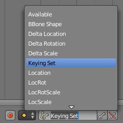

插帧集（keying set）¶

时间轴上的插帧集。
插帧集是一组属性值。
它们用于记录同一时刻的多个属性。当你在3D View中按 I 时，Blender会将所有当前活动插帧集（active keying set）里的属性值插入到关键帧中。
有几种Blender内嵌的的插帧集。用户也可以自定义插帧集，称为 Absolute Keying Sets (绝对插帧集)。
为了选择和使用插帧集，在 时间轴标题栏 或插帧集面板上，或在3D视图按下 Ctrl-Alt-Shift-I 设置 激活的插帧集 。
插帧集面板¶
参考
面板：
这个面板用于添加，选择，管理 Absolute Keying Sets （绝对插帧集，用户自定义插帧集）。

插帧集面板。
- 激活的插帧集
活动场景中插帧集的 列表 。
- 添加
+ - 添加空的插帧集。
- 添加
属性¶
- 描述
- 对插帧集的一个简短描述。
- 导出到文件
- 导出插帧集到Python脚本
File.py。可以在文本编辑器中打开File.py以重新导入插帧集。 - 关键帧设置
这些选项控制插帧集中的所有属性。注意，如果开启，在 用户设置 中相同的配置将覆盖这些属性配置。
- 仅仅所需要的
- 仅仅插入在函数曲线中所需要的关键帧。
- 可视关键值
- 基于可视变换信息插入关键帧。
- XYZ 到 RGB
- 对于新的函数曲线，例如，把颜色属性设置为RGB，位置设置为XYZ。
激活的插帧集面板¶
参考
面板：
这个面板用于在活动关键帧中插入属性。

激活的插帧集面板。

有命名组的图编辑器通道区域。
- 激活的插帧集路径
列表 中的一组路径，每一个都有一个 数据路径 对应到一个属性，以便插入到插帧集中。
- 添加
+ - 添加空路径。
- 添加
属性¶
- 目标
- ID块
- 设置ID类型和对于属性的数据路径的 物体ID 。
- 数据路径
- 设置其余对应属性的数据路径。
- 目标数组
- 使用数据路径的 所有选项 ，或者选择某一个特定属性的数组索引。
- 函数曲线组
控制哪些组用于加到通道中。
插帧集名字，空，命名组
- 关键帧设置
这些选项控制插帧集中的独立属性值。
- 仅仅所需要的
- 仅仅插入在函数曲线中所需要的关键帧。
- 可视关键值
- 基于可视变换信息插入关键帧。
- XYZ 到 RGB
- 对于新的函数曲线，例如，把颜色属性设置为RGB，位置设置为XYZ。
添加属性¶
参考
菜单：
快捷键：
K在插帧集中添加属性的方式。
在 用户界面 中右键单击属性，选择 添加单项到插帧集 或 添加多项到插帧集 。这将在活动插帧集中添加属性，如果当前没有插帧集，则创建一个新的。
将鼠标放在属性上，按 K，并选择 添加多项到插帧集 。